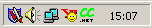

CCTray is an optional utility for use with the CruiseControl.NET Continuous Integration server. It provides feedback upon build progress, and allows control over some of the server's operations.
Once started, CCTray is normally only visible as an icon in the windows system tray.
The colour of the CCTray icon conveys information about the CruiseControl.NET server's state:

Ballon notifications use the standard Windows tray icon popup balloon whenever a build completes. The text within the balloon is configurable. Balloon notifications may be enabled/disabled.

Right-clicking the CCTray system tray icon displays a menu with several options:
Launch web page
Opens a browser at the CruiseControl.NET build web page for this project. The web page may also be launched by double-clicking the tray icon.
Settings...
Displays the settings form, from which you may configure CCTray.
Force build
Wakes the CruiseControl.NET server from its sleep and tells it to start building immediately. This menu item will be unavailable if the server is currently building.
Exit
Closes the CCTray application.
CCTray's configuration settings is stored in the file "cctray-settings.xml" (see a sample), which is located in the same folder as the executable. The file may be hand edited, though it's simpler to use the settings form. To launch the settings form, right-click the tray icon and select 'Settings...'.
Poll every n seconds
CCTray detects changes in the CCNet server state by polling at regular intervals. This value sets the period between polls.
Server
A Uri to the remoting interface of the CruiseControl.NET server.
Project name
The name of the project to be monitored, as described within the server's configuration file.
Show balloon notifications
Enables or disables notification of completed builds via balloon messages.
Show agent
Enables or disables notification of completed builds via agents.
Hide after announcement
Turns the agent off after they deliver the completed build message.
Agent
The agent to use. This agent must be installed.
Audio
The location of audio files to play upon completed builds. The checkbox enables individual sounds. Use the folder icon to browse for the wav file, and the play icon to preview the sound.
MS agents may be used to notify you of completed builds. Agents must be installed on your PC before you can use them (they're not part of a default Windows install). The MS Agent homepage is www.microsoft.com/msagent, and the download page is here (you can download the software that enables speech here too). An agent WebRing exists here www.msagentring.org.
The agent shown above is Peedy. Peedy's installer should give CCTray access to the relevant ACS (Agent Character Script) file. Other agents (such as those used by Microsoft office) must be referenced by absolute paths, and the cctray-settings.xml file must currently be edited by hand. The agents that ship with MS Office 2000 are kept in the folder C:\Program Files\Microsoft Office\Office\.
My CCTray icon is constantly greyed out. How can I tell why this is happening?
A grey icon indicates some sort of connection or server error. In such cases, the tray icon's tooltip is the exception message. Set your mouse motionless above the CCTray icon for a second to see this message.
"Launch web page" doesn't display the right URL... help!
The URL at which your CruiseControl.NET build results are available is in the server configuration. Ensure that your server's configuration has a fully qualified host name (not just localhost).
I've selected "Notification Balloon", but it only flickers onto the screen momentarily.
This has been observed in cases where an envelope icon appears in the system tray (indicating you've got mail -- probably a build report) which nudges the CCTray icon aside, causing the notification balloon to disappear.
I've found a bug. Who can I tell?
Please send help requests to the CCNet user mailing list: ccnet-user@lists.sourceforge.net.